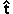

Let us now complete the details of the calculation on Page 17 and calculate the amounts of work done by the applied force and the friction force. If you have not done so already, you may first want to go back to Page 16 and make a drawing of the set-up in your Notebook, with relevant data.
In general, work is the scalar product (dot product) of force and displacement. We will calculate the two scalar products in terms of the components of the vectors involved, where the axes are chosen as shown on Page 16. See Scalar Product under Related Items.
We will need the unit vector pointing up the incline, , and the unit vector pointing along the upward normal to the incline, ,
 =
(cos a, sin a) =
(cos 20o, sin 20o) = (0.9397, 0.3420)
=
(cos a, sin a) =
(cos 20o, sin 20o) = (0.9397, 0.3420)
and
 =
(-sin a, cos a)
= (-0.3420, 0.9397) .
=
(-sin a, cos a)
= (-0.3420, 0.9397) .
Multiplying the unit vector by the distance traveled, d = 2 m, gives the displacement vector of the block,

 =
d = 2(0.9397, 0.3420)
=
d = 2(0.9397, 0.3420)
 = (1.879, 0.684) m.
= (1.879, 0.684) m.
In order to calculate the friction force, we first need to calculate the normal force. To do so, we need the components of the applied and gravitational forces along the upward normal. These are equal to the dot products of with the two forces,
 Fapp,normal =
Fapp,normal = 
 = (2, 3)(-0.3420,
0.9397) = 2×(-0.3420) + 3×0.9397= 2.135 N,
= (2, 3)(-0.3420,
0.9397) = 2×(-0.3420) + 3×0.9397= 2.135 N,
 Fgrav,normal = = (0, -4)(-0.3420, 0.9397) = 0 + (-4)×0.9397 = -3.759 N.
Fgrav,normal = = (0, -4)(-0.3420, 0.9397) = 0 + (-4)×0.9397 = -3.759 N.
Given the displacement vector, we can calculate the work done by the applied force
 Wapp = app = (2,
3)(1.88, 0.68) = 2×1.88 + 3×0.68 = 5.81
J.
Wapp = app = (2,
3)(1.88, 0.68) = 2×1.88 + 3×0.68 = 5.81
J.
To calculate the work done by the friction force, we need to know the magnitude of this force. This is given by the product of the coefficient of friction and the magnitude of the normal force. We need to calculate the latter.
The sum of the normal components of all forces must be zero if the motion of the block is to be along the incline. If N denotes the component of the normal force along the upward normal, we must have
Comment. If Fapp,normal is sufficiently large, N can turn out to be negative. This means that the normal force has to be downward rather than upward to keep the block moving along the incline. Since this is impossible, unless special brackets are provided to keep the block on the incline, the block will come off the incline in this case.
We can now calculate the magnitude of the friction force,
Ffr = m N = 0.5 x 1.624 = 0.812 N.
Since the displacement is up the incline and the friction force in the opposite direction, down the incline, the work done by the friction force is equal to
Wfr = - Ffr d = - 0.812 x 2 = - 1.624 J.